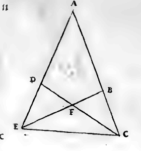

Propositio VII · Theorema I & Lemma IV¶



PROP. VII. THEOR. I.
Recta DB secet vtcumque triangulum EAC, itaut fiat triangulum DAB, & iungantur BE, DC se inuicem secantes in F; dico DF ad FC eam habere rationem, quam habet pyramis, cuius basis triangulum ABD, & altitudo EF ad pyramidem, cuius basis triangulum AEC, & altitudo FB.
(tab. 1. fig. 10, emend. fig. 12) Quoniam ratio ponderis C ad D, rectae videlicet DF ad FC componitur ex rationibus ponderum C ad B ad E ad D, rectarum videlicet AB ad AC, EF ad FB, & AD ad AE: ex ijsdem verò rationibus componitur ratio parallelepipedi contenti rectangulo AB in EF, tanquam basi, & altitudine DA, ad parallelepipedum contentum rectangulo AC in FB, tanquam basi, altitudine verò AE; ergo DF ad FC est vt parallelepipedum
f. 0028 · p. 11factum ex rectangulo AB in EF, altitudine DA, ad parallelepipedum ex AC in FB rectangulo, & altitudine AE, seu vt parallelepipedum contentum rectangulo DAB, altitudine EF, ad parallelepipedum contentum rectangulo CAE, & altitudine FB: componitur autem ratio horum duorum parallelepipedorum ex ratione, quam habet rectangulum DAB basis vnius, ad rectangulum CAE basim alterius, & altitudo EF ad altitudinem FB; rectangulum verò DAB ad rectangulum CAE componitur ex rationibus rectarum AB ad AC, & DA ad AE, ex quibus componitur etiam triangulum DAB ad triangulum AEC, cum angulus A ad verticem communis sit; ergo DF ad FC componitur ex rationibus trianguli DAB ad triangulum EAC, & rectae EF ad FB; hoc est DF ad FC est in ea ratione in qua est pyramis, cuius basis triangulum DAB, & altitudo EF, ad pyramidem, cuius basis triangulum AEC, & altitudo FB, quod &c. (in marg. Ex Federico Command. in 23. 6.)
COROLLARIVM.
Hinc constat, si EF fuerit aequalis ipsi FB, esse triangulum DAB ad triangulum AEC, vt est recta DF ad FC. Cum enim rectae EF, FB sint aequales altitudines praedictarum pyramidum, erunt iccirco inter se vt bases.
LEMMA IV.
Si aliqua proportio fuerit composita ex pluribus deinceps rationibus, inde perturbato antecedentium, vel consequentium ordine, siue etiam vtroque, vt fiant totidem aliae rationes, component istae eandem priorem rationem.
A C E G ✠ K M :: O
B D F H I L N :: P
A ✠ K E C G M :: Q
N D H L F I B :: R
Sint quotlibet rationes, puta septem expositae A ad B, C ad D, E ad F, G ad H, ✠ ad I, K ad L, & M ad N: ratio verò ex ipsis composita sit O ad P. Perturbato iam ordine antecedentium
A C E G ✠ K M inter se quomodocunque, vt sit A ✠ K E C G M; vel ordine consequentium B D F H I L N, vt sit N D H L F I B.
Dico si ex rationibus A ad N, ✠ ad D, K ad H, E ad L, C ad F, G ad I, & M ad B fiat ratio Q ad R, hanc similem esse priori O ad P. (in marg. Ex Clau. ad prop. 19. 8.)
Nam ex multiplicatione laterum A C E G ✠ K M, vel ipsorum A ✠ K E C G M fit semper idem productum; pariterque idem quod oritur ex ductu laterum B D F H I L N, fit etiam ex multiplicatione laterum N D H L F I B;
Ratio ergo producti priorum antecedentium ad productum priorum consequentium erit eadem penitus ac illa producti postremarum, seù perturbatarum antecedentium, ad productum postremarum consequentium; sed vt O ad P, ita productum ex antecedentibus prioris ordinis ad productum eiusdem primi ordinis consequentium;
itemque vt Q ad R ita productum ex secundi ordinis antecedentibus ad productum eiusdem ordinis consequentium; ergo si duae illae rationes productorum (vt ostendimus) sunt inter se similes, necesse est vt quoque similes sint duae rationes O ad P, & Q ad R, quod erat &c.